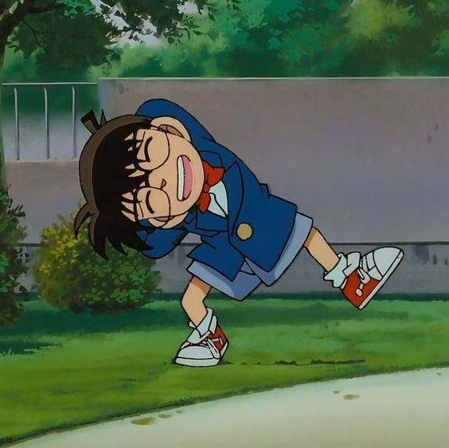
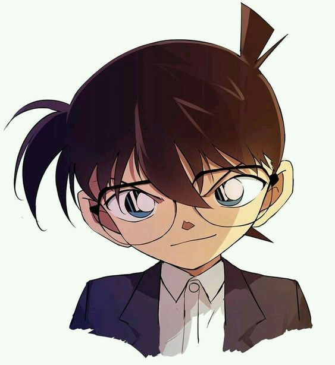
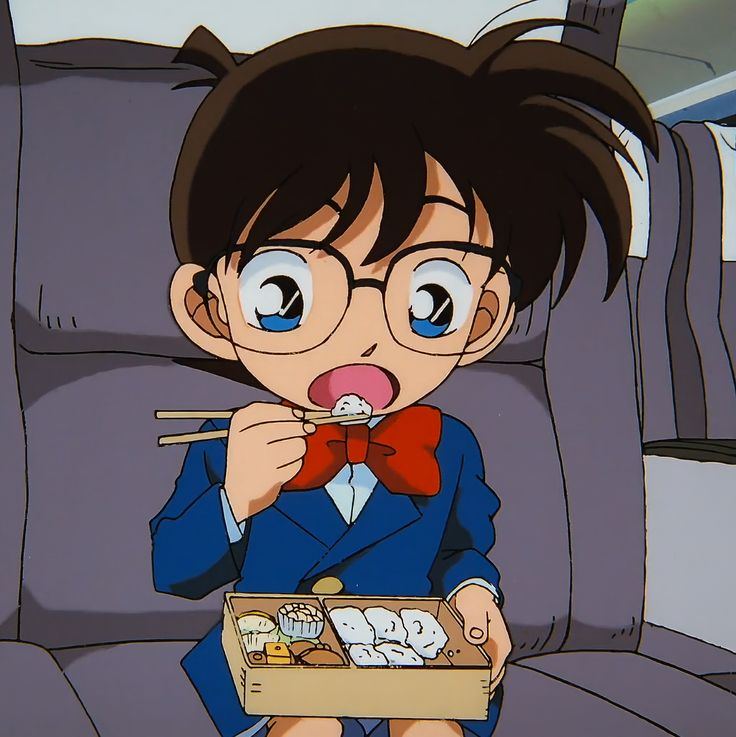
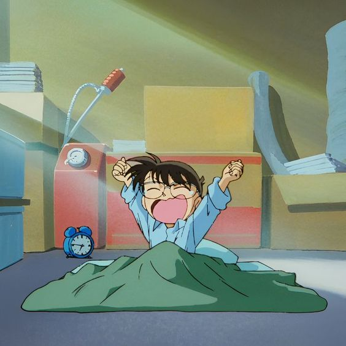

La historia se centra en "Shinichi Kudo". Él está atrapado en el cuerpo de un niño pequeño de seis o siete años, pero su mente es la de un adulto. Para no ser descubierto Shinichi mezcla los nombres de "Ranpo Edogawa" y "Sir Arthur Conan Doyle" y adopta la personalidad de "Conan Edogawa". En ese alter ego destapará casos cada vez más difíciles, dejando atrás a sus contrapartidas adultas a la altura del betún.
   El detective juvenil más famoso de Japón, el estudiante de secundaria Shinichi Kudo, se encuentra en un parque de atracciones junto a su amiga de la infancia Ran Mouri, de la que está secretamente enamorado.
Allí, después de resolver un nuevo caso, se separa de su amiga y presencia un intercambio sospechoso entre uno de los hombres vestidos de negro que estaba presente en el caso anterior y un hombre misterioso. Mientras los espiaba, Shinichi es atacado por la espalda por el compañero del hombre de negro, y le administran un veneno con el fin de matarlo. Sin embargo el veneno tuvo un efecto inesperado: el cuerpo de Shinichi pasó a convertirse en el de un niño de 6 años.
Ahora, haciéndose llamar Conan Edogawa y ocultando su verdadera identidad con tal de proteger a los suyos y a él mismo de los Hombres de negro, el joven detective se traslada a casa de Ran y su padre: el detective Kogoro Mouri. Ninguno de ellos sabe que Conan es, en realidad, Shinichi y éste utilizará su secreto para resolver los casos del propio Mouri en su nombre y sin que nadie lo sepa. Ni el propio Kogoro.